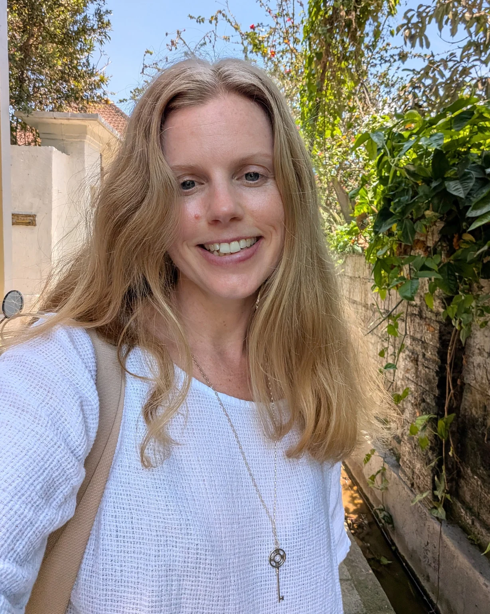

A little about me
Hello, I’m Rebecca.
I’m a Gene Keys Guide from Perth, Western Australia. My background is in biomedical research and statistics, and I love birds, long walks and conversations that help something become clearer.
I’m interested in how contemplation connects with the everyday work of offering our skills to others.

My way into the Gene Keys
It began with
a recommendation.
An Audible recommendation introduced me to the Gene Keys.
I completed the Gene Keys Guides Programme.
Since then, the Gene Keys has become a continuing part of my contemplation.
I particularly love the Delta programme. I have participated in four Deltas and in the Star of Consciousness.
In this work, I bring that love of contemplation together with the practical task of describing what we offer and making it easier for people to find us.
My research background brings an appreciation for careful listening, clear language and organising complex material. I enjoy finding a useful structure without losing the person’s own words.

Working with me
Space to speak.
Help to bring it together.
You bring the experience of your work. I bring questions, attention and help organising what emerges.
We can pause, return to a thought and try different words. The aim is language you recognise, grounded in what you actually offer.
Explore my approachThe Pearlworks connection
Why Pearlworks
Pearlworks gives this work a wider home. Alongside the individual offerings, I am exploring how people can learn in relationship, create a body of useful work and support continued participation.
Explore Pearlworks View bookingsWhat are you ready to put into words?
You can begin with a question, a few scattered notes, or a sense that it is time for your work to have a website. We agree the format, timing and fee before working together.
View bookings